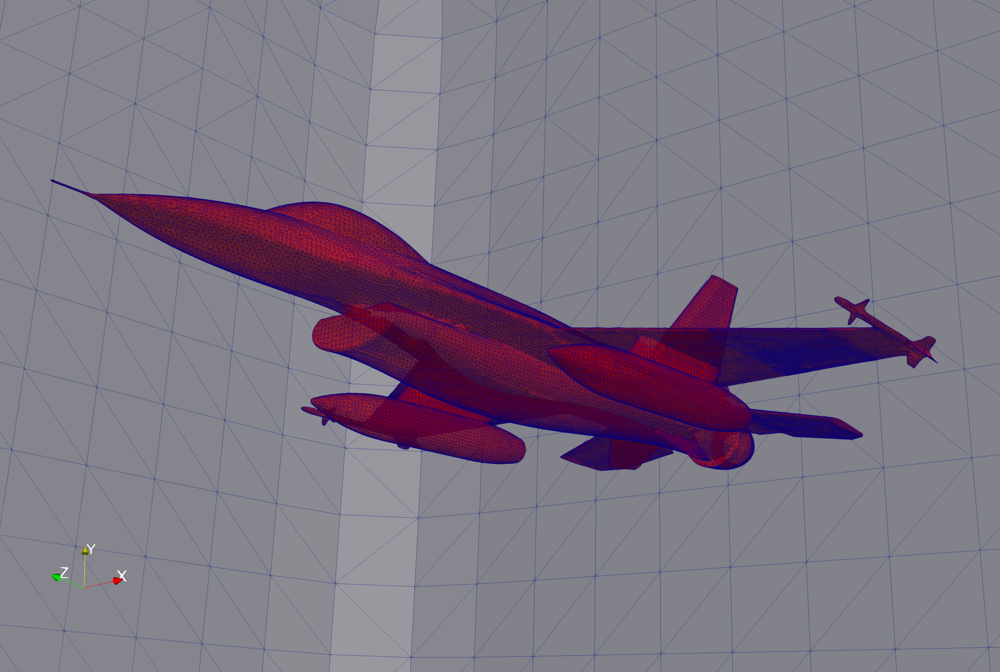
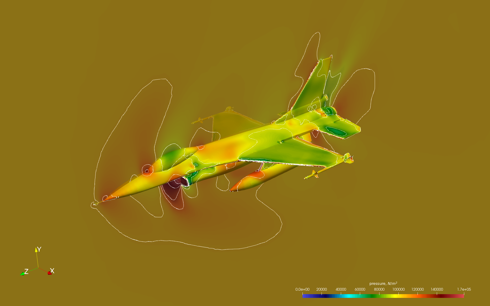

Inciter: Example setup for marching a transonic problem to steady-state
This example runs the ALECG hydrodynamics algorithm marching the solution to steady state using a local time-stepping procedure. The problem is initialized with a free-stream Mach number of M=0.84 and an angle of attack of 3.06 degrees.

Surface mesh for computing the flow around the F16, nelem=6M, npoin=1M, see below.
Control file
# vim: filetype=sh: # This is a comment # Keywords are case-sensitive title "F16" inciter ttyi 10 # TTY output interval cfl 0.5 steady_state true residual 1.0e-5 rescomp 1 scheme alecg partitioning algorithm mj end compflow depvar u physics euler ic density 1.225 end # density of air at STP, kg/m3 pressure 1.0e+5 end # N/m^2 # sound speed: sqrt(1.4*1.0e+5/1.225) = 338.06 m/s # free stream Mach number: M = 0.84 # angle of attack: 3.06 degrees # u = M * a * cos(3.06*pi/180) = 283.57 # v = M * a * sin(3.06*pi/180) = 15.159 velocity 0.0 15.159 -283.57 end end material gamma 1.4 end end bc_sym sideset 1 2 7 end end bc_farfield pressure 1.0e+5 density 1.225 velocity 0.0 15.159 -283.57 end sideset 12 end end end field_output interval 1000 var density pressure x-velocity y-velocity z-velocity specific_total_energy end sideset 1 2 7 end end diagnostics interval 1 format scientific error l2 precision 12 end end
Run on 34 CPUs
./charmrun +p34 Main/inciter -v -i ../../tmp/f16b_tet.exo -c ../../tmp/f16.q
Screen output during the run
,::,` `.
.;;;'';;;: ;;#
;;;@+ +;;; ;;;;;, ;;;;. ;;;;;, ;;;; ;;;; `;;;;;;: ;;;
:;;@` :;;' .;;;@, ,;@, ,;;;@: .;;;' .;+;. ;;;@#:';;; ;;;;'
;;;# ;;;: ;;;' ;: ;;;' ;;;;; ;# ;;;@ ;;; ;+;;'
.;;+ ;;;# ;;;' ;: ;;;' ;#;;;` ;# ;;@ `;;+ .;#;;;.
;;;# :;;' ;;;' ;: ;;;' ;# ;;; ;# ;;;@ ;;; ;# ;;;+
;;;# .;;; ;;;' ;: ;;;' ;# ,;;; ;# ;;;# ;;;: ;@ ;;;
;;;# .;;' ;;;' ;: ;;;' ;# ;;;; ;# ;;;' ;;;+ ;', ;;;@
;;;+ ,;;+ ;;;' ;: ;;;' ;# ;;;' ;# ;;;' ;;;' ;':::;;;;
`;;; ;;;@ ;;;' ;: ;;;' ;# ;;;';# ;;;@ ;;;:,;+++++;;;'
;;;; ;;;@ ;;;# .;. ;;;' ;# ;;;;# `;;+ ;;# ;# ;;;'
.;;; :;;@ ,;;+ ;+ ;;;' ;# ;;;# ;;; ;;;@ ;@ ;;;.
';;; ;;;@, ;;;;``.;;@ ;;;' ;+ .;;# ;;; :;;@ ;;; ;;;+
:;;;;;;;+@` ';;;;;'@ ;;;;;, ;;;; ;;+ +;;;;;;#@ ;;;;. .;;;;;;
.;;#@' `#@@@: ;::::; ;:::: ;@ '@@@+ ;:::; ;::::::
:;;;;;;. .___ .__ __
.;@+@';;;;;;' | | ____ ____ |__|/ |_ ___________
` '#''@` | |/ \_/ ___\| \ __\/ __ \_ __ \
| | | \ \___| || | \ ___/| | \/
|___|___| /\___ >__||__| \___ >__|
\/ \/ \/
< ENVIRONMENT >
------ o ------
* Build environment:
--------------------
Hostname : lagrange
Executable : inciter
Version : 0.3 (C20072)
Revision SHA1 : Quinoa_v0.3-557-gde8827343
CMake build type : RELEASE
Asserts : off (turn on: CMAKE_BUILD_TYPE=DEBUG)
MPI C++ wrapper : /usr/bin/mpicxx
Underlying C++ compiler : /usr/lib/ccache/g++
Build date : Thu 17 Jun 2021 12:36:08 PM MDT
* Run-time environment:
-----------------------
Date, time : Thu Jun 17 13:03:09 2021
Work directory : /home/jbakosi/code/quinoa/build/gnu
Executable (relative to work dir) : Main/inciter
Command line arguments : '-v -i ../../tmp/f16b_tet.exo -c ../../tmp/f16.q'
Screen output, -v : verbose
Screen output log file, -O : inciter_screen.log
Input log file : inciter_input.log
Number of processing elements : 34 (34x1)
Quiescence detection, -q : off
Chare state output, -S : off
Call and stack trace, -t : on
Non-blocking migration, -n : off
Benchmark mode, -b : off
Load-balancing frequency, -l : 1
Checkpoint/restart frequency, -r : 1000
Control file : ../../tmp/f16.q
Parsed control file : success
< FACTORY >
---- o ----
* Unknowns data layout (CMake: FIELD_DATA_LAYOUT):
--------------------------------------------------
unknown-major
* PDE factory legend, policy codes:
-----------------------------------
Physics configuration (policy code: p)
A - Advection
D - Advection + diffusion
E - Euler
N - Navier-Stokes
V - Velocity equilibrium
Test problem (policy code: t)
U - User-defined
S - Shear-diffusion
V - Vortical flow
N - Nonlinear energy growth
R - Rayleigh-Taylor
T - Taylor-Green
Z - Zalesak's slotted cylinder
G - Advection of 2D Gaussian hump
C - Advection of cylinder
X - Deformation of cylinder in a vortex
F - Shedding flow over triangular wedge
H - Sod shock-tube
O - Rotated Sod shock-tube
B - Sedov blast-wave
I - Interface advection
A - Advection of 2D Gaussian hump for Euler equations
W - Water-air shock-tube
E - Shock He-bubble problem
D - Underwater explosion problem
* Registered PDEs using continuous Galerkin (CG) methods:
---------------------------------------------------------
Unique equation types : 2
With all policy combinations : 30
Compressible single-material flow : p:EN, t:ABFHNORTUV
Transport : p:AD, t:CGSXZ
* Registered PDEs using discontinuous Galerkin (DG) methods:
------------------------------------------------------------
Unique equation types : 3
With all policy combinations : 21
Compressible multi-material flow : p:V, t:DEHIUW
Compressible single-material flow : p:E, t:ABFHNORTUV
Transport : p:A, t:CGSXZ
< PROBLEM >
---- o ----
* Title: F16
-------------
* Discretization parameters:
----------------------------
Discretization scheme : ALECG+RK
PE-locality mesh reordering : false
Operator-access mesh reordering : false
Local time stepping : true
L2-norm residual convergence criterion : 1e-05
Convergence criterion component index : 1
Number of time steps : 18446744073709551615
Start time : 0
Terminate time : 1.79769e+308
CFL coefficient : 0.5
* Partial differential equations integrated (1):
------------------------------------------------
< Compressible single-material flow >
dependent variable : u
physics : Euler
problem : User-defined
number of components : 5
start offset in unknowns array : 0
ratio of specific heats : 1.4
material stiffness : 0
specific heat at constant volume : 717.5
IC background density : 1.225
IC background velocity : { 0 15.159 -283.57 }
IC background pressure : 100000
Farfield BC sideset(s) : { 12 }
Farfield BC density : 1.225000
Farfield BC velocity : { 0 15.159 -283.57 }
Farfield BC pressure : 100000.000000
Symmetry BC sideset(s) : { 1 2 7 }
* Input/Output filenames and directories:
-----------------------------------------
Input mesh(es) : { ../../tmp/f16b_tet.exo }
Volume field output file(s) : out.e-s.<meshid>.<numchares>.<chareid>
Surface field output file(s) : out-surf.<surfid>.e-s.<meshid>.<numchares>.<chareid>
History output file(s) : out.hist.{pointid}
Diagnostics file : diag
Checkpoint/restart directory : restart/
* Output intervals:
-------------------
TTY : 10
Field and surface : 1000
Diagnostics : 1
Checkpoint/restart : 1000
* Output fields:
----------------
Node field(s) : { density pressure specific_total_energy x-velocity y-velocity z-velocity }
Surface side set(s) : { 1 2 7 }
Quinoa> Reading mesh(es)
Quinoa> Mesh read time: 1.948046 sec
* Initial load distribution:
----------------------------
Total number of tetrahedra : 6028542
Total number of points : 1042051
Total number of work units : 34
* Mesh partitioning:
--------------------
Mesh partitioning algorithm : multi-jagged
Virtualization [0.0...1.0] : 0
* Initial load distribution:
----------------------------
Total number of tetrahedra : 6028542
Total number of points : 1042051
Total number of work units : 34
Quinoa> Preparing mesh ... done
Quinoa> Mesh 0 distribution statistics: min/max/avg(edgelength) = 0.000728 / 18.314657 / 0.495553, min/max/avg(V^{1/3}) = 0.002931 / 6.964812 / 0.200741, min/max/avg(ntets) = 177310 / 177311 / 177310
* Time integration: Navier-Stokes solver
----------------------------------------
Legend: it - iteration count
t - physics time
dt - physics time step size
ETE - estimated wall-clock time elapsed (h:m:s)
ETA - estimated wall-clock time for accomplishment (h:m:s)
EGT - estimated grind wall-clock time (ms/timestep)
flg - status flags, legend:
f - field (volume and surface)
d - diagnostics
t - physics time history
h - h-refinement
l - load balancing
r - checkpoint
it t dt ETE ETA EGT flg
-------------------------------------------------------------------------
Quinoa> Preparing workers ... done
Quinoa> Load balancing on (if enabled in Charm++)
Quinoa> Starting time stepping ...
10 5.948514e-05 6.085095e-06 000:00:00 000:00:00 2056 dl
20 1.205544e-04 6.116550e-06 000:00:00 000:00:00 2053 dl
30 1.817655e-04 6.123686e-06 000:00:00 000:00:00 2042 dl
40 2.430199e-04 6.126608e-06 000:00:00 000:00:00 2042 dl
50 3.042976e-04 6.128686e-06 000:00:00 000:00:00 2042 dl
60 3.655963e-04 6.130900e-06 000:00:00 000:00:00 2047 dl
70 4.269196e-04 6.133588e-06 000:00:00 000:00:00 2043 dl
80 4.882731e-04 6.136872e-06 000:00:00 000:00:00 2044 dl
90 5.496628e-04 6.140794e-06 000:00:00 000:00:00 2043 dl
* Timers (h:m:s):
-----------------
Migrate global-scope data : 0:0:0
Total runtime : 0:3:28As the above screen output shows, the simulation took about three and a half minutes using 34 CPUs.
Solution

Pressure contours.